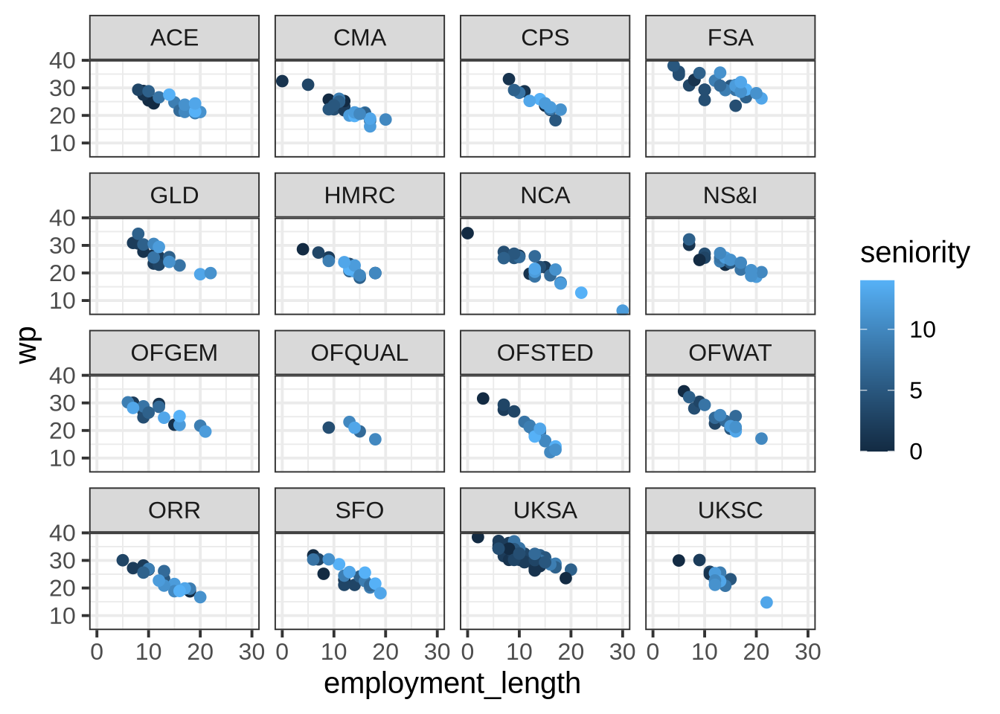

RQ: How is the pride that government employees feel about their workplace associated with how long they have been employed and their seniority level?
variable
description
department_name
Name of government department
dept
Department Acronym
virtual
Whether the department functions as hybrid department with various employees working remotely (1), or as a fully in-person office (0)
role
Employee role (A, B or C)
seniority
Employee's seniority level. These map to roles, such that role A is 0-4, role B is 5-9, role C is 10-14. Higher numbers indicate more seniority
employment_length
Length of employment in the department (years)
wp
Composite measure of 'workplace pride'
NoteMore detail about this dataset
A questionnaire was sent to all UK civil service departments, and the lmm_jsup.csv dataset contains all responses that were received. Some of these departments work as hybrid or ‘virtual’ departments, with a mix of remote and office-based employees. Others are fully office-based.
The questionnaire included items asking about how much the respondent believe in the department and how it engages with the community, what it produces, how it operates and how treats its people. A composite measure of ‘workplace-pride’ was constructed for each employee. Employees in the civil service are categorised into 3 different roles: A, B and C. The roles tend to increase in responsibility, with role C being more managerial, and role A having less responsibility. We also have data on the length of time each employee has been in the department (sometimes new employees come straight in at role C, but many of them start in role A and work up over time).
Question 1
The research question (see above) is asking about how workplace pride is associated with employment length and seniority. From this question, we know that our outcome variable will be wp, and our predictors will be employment_length and seniority.
Now: Our analysis will also contain one set of random effects, because we’ll need to model the random variability contributed by a grouping variable. Identify the grouping variable that we will need to model using random effects.
Solution 1. The grouping variable that we’ll need to model using random effects because it contributes random variability is either dept or department_name. These two are equivalent: they define the same groups and contain the same information. Because dept is shorter and contains the abbreviations, for simplicity’s sake we’ll use that one below.
The other possible answers and why they’re not applicable:
wp is continuous, so it cannot be a grouping variable, and moreover, it’s the outcome variable, so it also cannot be a grouping variable.
employment_length is continuous, so it cannot be a grouping variable.
seniority is continuous, so it cannot be a grouping variable.
virtualis a grouping variable, but it doesn’t contribute random variability, because it’s a variable that the study designers are controlling. If we were including it in the model (which we are not, because it does not pertain to the RQ), we would include it through fixed effects, not random effects.
roleis a grouping variable, but it doesn’t contribute random variability, because it’s a variable that the study designers are controlling. If we were including it in the model (which we are not, because it does not pertain to the RQ), we would include it through fixed effects, not random effects.
Question 2
Get to know the dataset and describe the grouping variable.
Specifically:
What does each observation in wp_data represent?
How many levels are there in the grouping variable?
What does each level represent?
How many observations do we have from each level? Which level has the most observations? Which has the fewest?
Solution 2. Based on the description of the dataset and a quick look at the first few rows:
head(wp_data)
# A tibble: 6 × 7
department_name dept virtual role seniority employment_length wp
<chr> <chr> <dbl> <chr> <dbl> <dbl> <dbl>
1 UK Statistics Authority UKSA 1 A 1 9 32.9
2 UK Statistics Authority UKSA 1 B 6 20 26.7
3 UK Statistics Authority UKSA 1 B 6 14 31.9
4 UK Statistics Authority UKSA 1 A 1 9 33.4
5 UK Statistics Authority UKSA 1 A 4 6 34.4
6 UK Statistics Authority UKSA 1 A 2 11 31
Each row represents one employee’s data. The employee in the first row, for example, is employed at UKSA, works remotely (virtual = 1), is in a role of class A, has a seniority of 1, has been employed 9 years, and has a workplace pride score of 32.9.
To see how many observations we have per level of our grouping variable dept:
Looking at this data frame, we can tell that there are 16 levels within dept because there are 16 rows, that is, 16 distinct values of dept that we are counting.
Each value of dept represents one department within the UK Government.
The output of group_by() |> count() tells us how many people we have data from in each department. We can also add on the arrange() function to sort these values in order, to easily see what the maximum and minimum values are.
We see that OFQUAL (Office of Qualifications and Examinations Regulation) has the fewest observations at 5, and UKSA (UK Statistics Authority) has the most observations at 45.
Question 3
Here is a plot of the overall association between employment_length and wp. Each dot is coloured based on that employee’s seniority, so all variables from the RQ are included. First, copy this code and generate this plot yourself.
wp_data |>ggplot(aes(x = employment_length, y = wp, colour = seniority)) +facet_wrap(~ dept) +# <- this is the line that facets the plot by deptgeom_point()

Question 4
Make some predictions based on the plot you just created.
Specifically:
Which level(s) of the grouping variable appear to have higher workplace pride than the others? Which levels appear to have lower workplace pride?
Are there particular levels of this grouping variable that appear to have a stronger effect of employment length on workplace pride?
You’ll refer to these levels later, so write them down.
Solution 4. To see which departments have higher workplace pride than others, look for the dots that correspond to larger values on the y axis showing wp.
Eyeballing the plot from the previous solution, it looks to me like FSA and UKSA might have higher workplace pride than other departments. And when looking for smaller values on the y axis, I see that OFQUAL looks like it has pretty low workplace pride scores compared to the others.
To see which departments have a stronger effect of employment length on workplace pride, try to imagine how steep the line would be that correlates employment_length with wp. In other words: As employment_length increases, how fast does wp appear to decrease?
To me, it looks to me like OFSTED and CPS have slopes that might be a bit steeper. That is, their wp seems to decrease faster than in other departments.
Question 5
Now we’ll fit a linear mixed model to this data.
We want to estimate the effects of employment length and seniority on workplace pride. Therefore, we know that our fixed effects will be wp ~ employment_length + seniority.
The model should include random intercepts by the grouping variable, as well as random slopes by that variable over both predictors. Fill in the ... blanks in the R code below with the appropriate values and variable names.
Let’s look at the term (1 + employment_length + seniority | dept) piece by piece:
First, the right-hand side of the term (the bit after the vertical line |) is dept. Therefore the model will find adjustments to the fixed effects for each distinct level of dept.
Now, looking at the left-hand side (the bit before the vertical line |:
The 1 means that the model will estimate adjustments to the fixed intercept by dept (aka “random intercepts”).
The + employment_length means that the model will ALSO estimate adjustments to the fixed slope over employment_length by dept (aka “random slopes over employment_length”).
And the + seniority means that the model will ALSO estimate adjustments to the fixed slope over seniority by dept (aka “random slopes over seniority”).
Question 6
Plot the random effects estimated by wp_lmm using dotplot.ranef.mer().
A little trick from the flash cards: to “zoom in” on the slope adjustments, you can modify the scales= argument, which will tell dotplot.ranef.mer() to scale each panel differently.
dotplot.ranef.mer(ranef(wp_lmm),scales =list(x =list(relation ='free')) # allow scales of subplots to vary)$dept
Question 7
Imagine you were including this dotplot of random effects in a report, and you had write a caption to describe it to your reader. Write one sentence per panel to tell the reader what is being displayed in each panel, and make sure to include what the dots/error bars represent.
Solution 7. One example:
The (Intercept) panel shows the adjustments to the fixed intercept for each UK government department (each dot represents the adjustment estimate and the error bars represent its 95% CI).
The employment_length panel shows the adjustments to the fixed slope over employment_length for each UK government department.
The seniority panel shows the adjustments to the fixed slope over seniority for each UK government department.
(Preview: in future weeks, we’ll look in depth at how to interpret random effects in relation to fixed effects. After that, we can write a more complete caption for this plot which would also tell the reader what it means when the adjustments to each fixed effect are positive or negative.)
Question 8
Compare your earlier predictions to the model-estimated random effects.
Back in Q4, you named a few levels that you thought might behave differently from the others.
Locate those levels in the dotplot of your random effects.
Does it look like the levels you identified are behaving differently from average in the way you predicted? How can you tell?
Solution 8. Here’s the dotplot again for convenient reference:
I said that I expected FSA and UKSA to have higher workplace pride than other departments. This would be reflected in positive adjustments to the fixed intercept. And yes, UKSA and FSA both have positive intercept adjustments, along with a few other departments like CPS and OFWAT.
I also said that I expected OFQUAL to have lower workplace pride than other departments. This would be reflected by a negative adjustment to the fixed intercept. And yes, the adjustment for OFQUAL is negative. (Note that its 95% CI includes zero—this means that, if we were doing significance testing for the random effects, we couldn’t reject the H0 that OFQUAL has no adjustment from the fixed intercept. But we’re not doing significance testing of random effects, so we can basically ignore this CI.)
Finally, I thought that OFSTED and CPS might have steeper slopes associating employment_length and wp. “Steeper” in this case means “more negative”, since the slope is already negative and it just gets more steeply negative in those departments. Therefore we’re looking for negative adjustments to the fixed slope over employment_length for OFSTED and CPS. And yes, that’s what we see (and the slope for OFSTED has a much larger adjustment than for CPS).
Question 9
Why are the numbers given to you by ranef(wp_lmm) and by coef(wp_lmm) different?
ranef() tells you how much each fixed effect should be adjusted for each level of dept. In contrast, coef() combines the random effects with the fixed effects and tells you the adjusted \(\beta\) parameters of the linear expression that associates employment_length and seniority with wp.
Question 10
How would you use the values given to you by ranef(wp_lmm) and fixef() to recreate the values of coef()?
Describe in one sentence.
Bonus coding challenge: Actually use the values from ranef() and fixef() to recreate the values of coef().
Solution 10. The one-sentence answer: add them together.
The explanation: ranef() gives you the adjustments to the fixed effects, and fixef() gives you the fixed effects themselves. So to get the coef() values—the adjusted effects for each level of dept—you must add the adjustments from ranef() to each fixed effect from fixef().
One possible solution to the challenge (but there are many paths to get to the same outcome):
# Store the fixed effect values with shorter variable names:(fixef_int <-fixef(wp_lmm)[['(Intercept)']])
# Add each fixed effect to each column produced by ranef():ranef(wp_lmm)$dept |>mutate(adjusted_int =`(Intercept)`+ fixef_int,adjusted_emp = employment_length + fixef_emp,adjusted_sen = seniority + fixef_sen, ) |># view only the new columnsselect(adjusted_int, adjusted_emp, adjusted_sen)
Notice that in the mutate() code above, we need to place ticks (that is, the character ` ) around "(Intercept)" because otherwise, the brackets around “Intercept” will stop mutate() from identifying it as a column name.